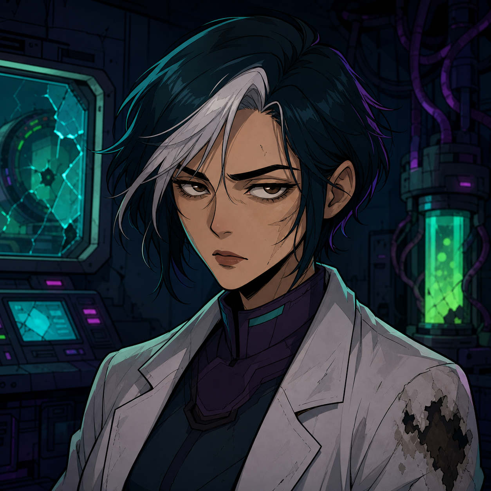
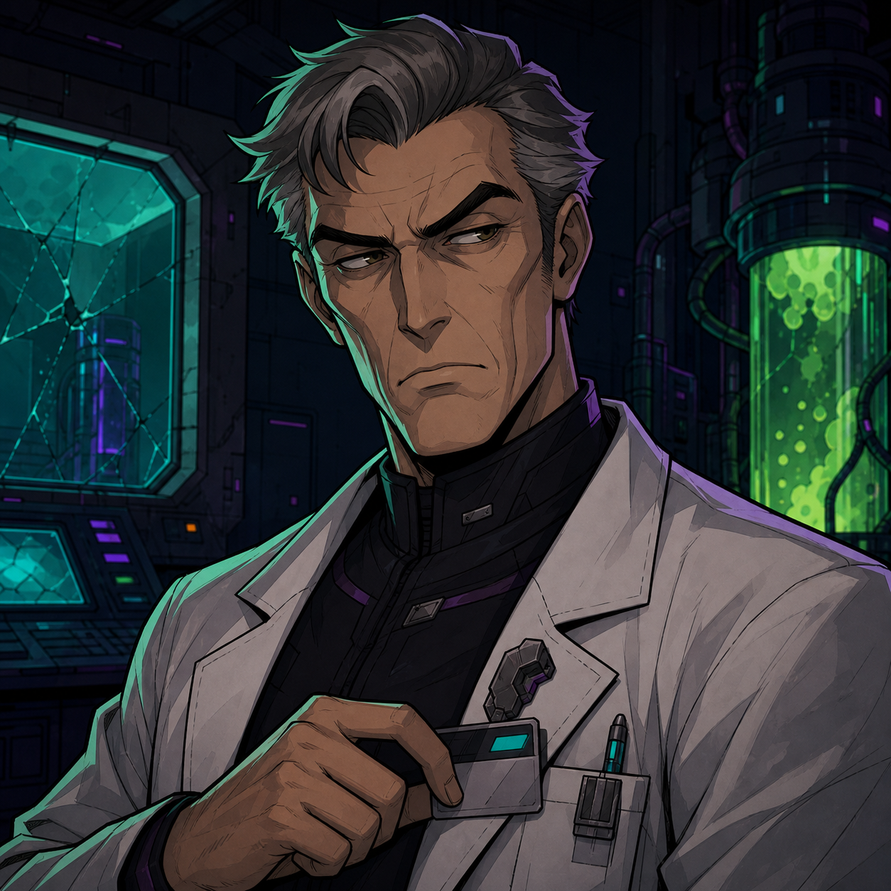
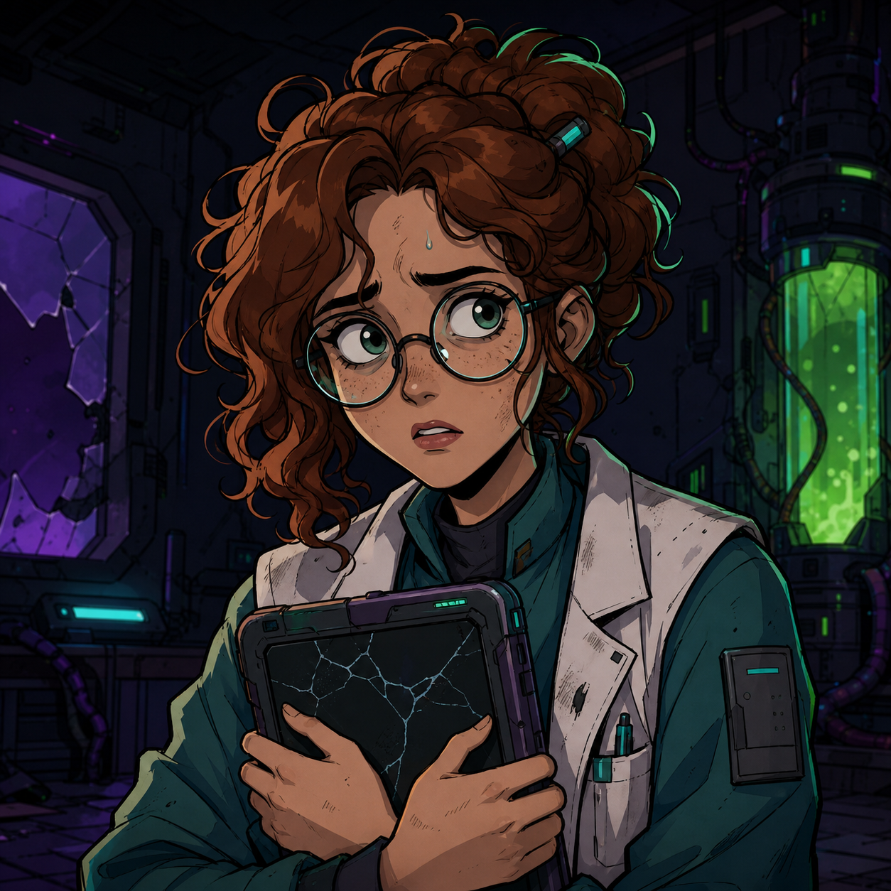
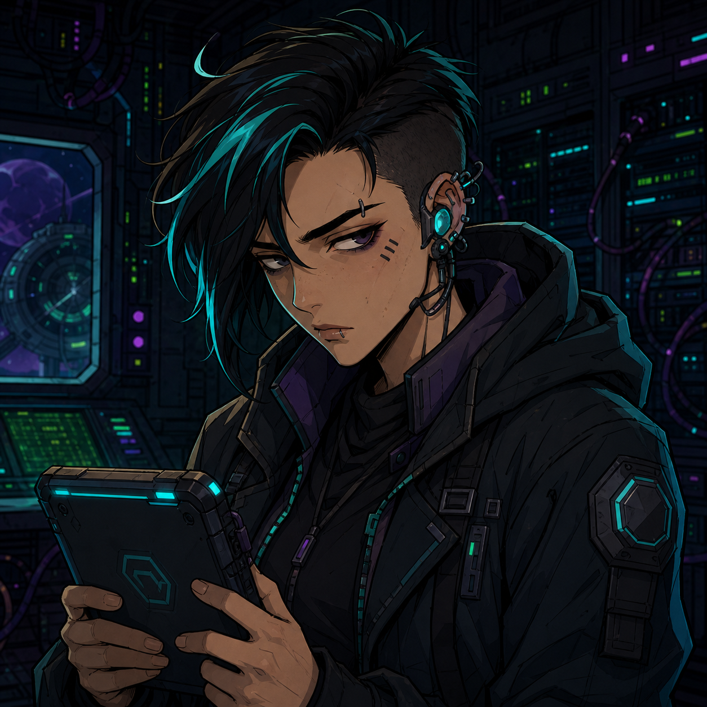

1/5
跳过 ▸
MIRROR LAB — 远程侦查推理
轨道空间站「赫利俄斯-7」— 量子物理实验舱 C-7
Dr. Yuki 被发现死在密封实验舱中。爆炸后舱内辐射超标，人类无法进入。
唯一现场操作员是一名空间警探。你将通过远程终端操控「空间者1号」进入现场，扫描辐射残影、时间戳和身份痕迹。
🧪 MORAN — 实验室主管
🔬 LILA — 研究助手
💻 ZERO — 系统工程师

YUKI死者 / 量子医生
MORAN男博士 / 主管
LILA博士助手
ZERO系统工程师扫描现场异常，收集物证。随后审讯三名嫌疑人，找出密室中的真正选择。
需要4位数字密码才能打开